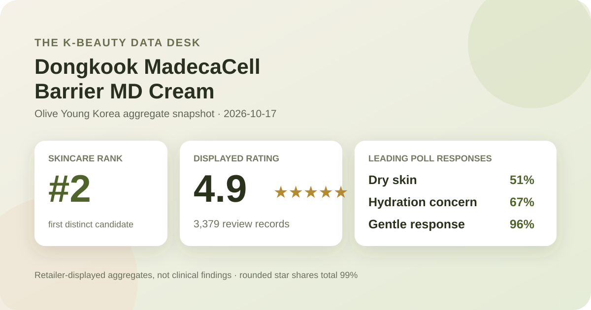
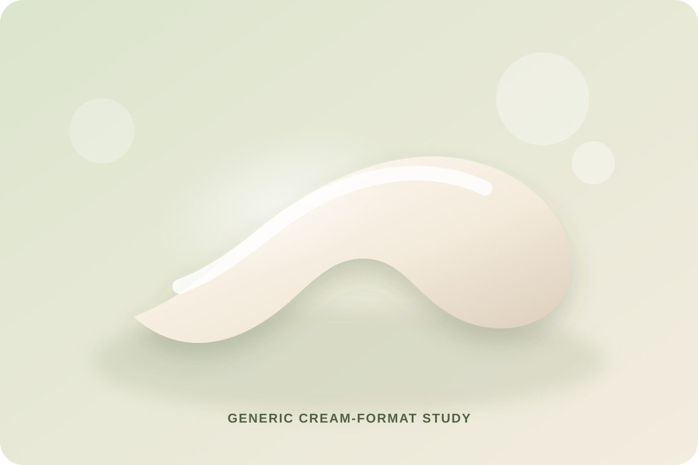

Data captured October 17, 2026. This analysis uses only Olive Young Korea's displayed aggregate rating, star distribution, and anonymous shopper polls. It does not reproduce or translate individual review text, names, or photos.

The short version: The listing showed 4.9 out of 5 from 3,379 review records. The displayed rating split was 96% five-star, 2% four-star, 1% three-star, and 0% each for two- and one-star. Dry skin, hydration concern, and the gentle response led their respective shopper polls.
The visible average was 4.9 stars. The product header displayed 3,379 review records, and the detailed review panel repeated the same count. That agreement matters because it avoids combining a current headline score with a different review total from another surface or capture.
The detailed panel displayed this rounded star distribution:
The one-point shortfall is a normal consequence of whole-number display rounding; it is not a missing category to be guessed. The pattern is strongly positive as a storefront satisfaction signal, but it is not a controlled trial. The interface does not establish the duration of use, the selected pack for every record, the rest of each routine, or whether the same question was answered by every reviewer.
The skin-type poll showed 51% dry, 43% combination, and 6% oily. Dry skin is the largest displayed group, but it is only eight percentage points ahead of combination skin. The sample therefore leans dry without being dominated by one skin-type label.
These labels are self-reported context, not eligibility criteria. They do not control season, climate, age, cleansing habits, concurrent actives, diagnosis, or how shoppers define dryness and oiliness. A reader with oily skin should also notice the small six-percent representation before generalizing from the overall score.
The separate concern poll displayed 67% hydration, 31% soothing, and 2% wrinkle or brightening concern. That tells us which broad concern categories respondents selected in the retailer questionnaire. It does not measure skin water content, transepidermal water loss, redness, barrier function, healing, or any clinical endpoint.
The product title includes “Barrier” and “MD,” and the Korean listing labels it a medical device. This analysis preserves that wording so readers can identify the correct listing. It does not independently assess the device classification, its intended-use statement, contraindications, or whether a particular person's concern falls within that scope. Those questions require the current package information and, when relevant, professional advice.
The irritation poll showed 96% gentle, 4% ordinary, and 0% felt irritation. The leading signal is favorable, but the zero is a rounded interface share rather than evidence that nobody reacted. Even a high gentle share cannot rule out allergy, irritation, acne, eye-area discomfort, or incompatibility with another product.
Retailer polls are descriptive and self-reported. They cannot diagnose sensitive skin, certify hypoallergenicity, or guarantee safety for damaged or medically treated skin. If the product is being considered for a diagnosed condition, a wound, a burn, post-procedure care, or another medical context, use the current authorized instructions and ask an appropriate clinician rather than treating this retail analysis as guidance.

The retailer places this product in the cream category. In general format terms, a cream is a leave-on emulsion intended to spread across skin, but that broad label does not reveal the product's exact viscosity, occlusiveness, scent, rub-in time, finish, ingredient balance, or behavior under sunscreen and makeup.
I did not handle or apply this product. The visual above is deliberately generic and does not reconstruct its real appearance. Follow the current package for application area, amount, frequency, storage, precautions, and any use restrictions attached to its medical-device status. Do not substitute crowd ratings for those directions.
A medical-device label is not interchangeable with a cosmetic marketing claim, yet it also does not make every shopper impression a medical result. The retail rating pools overall satisfaction across people and circumstances that the aggregate panel does not separate. It cannot show whether a reported impression came from the product alone, whether an intended-use population was involved, or whether another treatment changed the outcome.
This article therefore does not say the cream repairs a barrier, treats eczema, heals burns, reduces inflammation, speeds recovery, or replaces prescribed care. It also does not challenge or validate the listing's classification. The responsible conclusion is limited to what the captured retail interface actually exposed: identity, rank, score, count, star shares, and shopper-poll percentages.
At capture, the Korean listing showed a ₩78,000 reference price and a ₩39,700 promotional price for a two-pack of 70 g tubes. The page also displayed a unit-price line of ₩28,357 per 100 ml, even though the title used grams; that retailer presentation is another reason not to improvise cross-product unit comparisons.
Prices, coupons, gifts, inventory, selected options, and package configuration can change quickly. Before comparing value, verify the current quantity, measurement unit, authorized seller, regional labeling, checkout total, return terms, and whether any bonus item remains available. A promotional discount does not establish clinical or cosmetic performance.
The defensible reading is narrow: this was the first valid unpublished product after the covered rank-one mist; its 3,379-record profile was strongly positive; dry and combination skin made up nearly all displayed skin-type responses; hydration led the concern poll; and the irritation poll leaned strongly gentle.
For someone researching the listing, those signals justify checking the current package and authorized use information more closely. They do not justify calling it a guaranteed barrier treatment, a replacement for medical care, a reaction-free formula, or a certain match for dry skin. The next decision should rest on verified directions, ingredients, personal context, and qualified advice when the intended use is medical.
Dry skin was the largest displayed skin-type response at 51%, followed by combination skin at 43% and oily skin at 6%. That describes poll representation, not proven suitability or a treatment result.
No. This article records the retailer's product-title wording and does not evaluate regulatory documentation, diagnose a condition, or establish a personal medical outcome. Consult the current package and a qualified professional when appropriate.
The captured irritation poll showed 96% gentle, 4% ordinary, and 0% felt irritation. These are rounded self-reported aggregates and cannot guarantee individual tolerance.
The listing identifies a cream format, but this analysis did not apply the product. It does not claim a specific thickness, scent, absorption speed, finish, or compatibility with another routine.
It is a strong retail satisfaction signal across 3,379 linked records. It is not a clinical trial, a diagnosis, proof of barrier repair, or a prediction for one person's skin.
Source: Olive Young Korea product page, captured October 17, 2026. Product title, ranking, pack, price, rating, review count, star shares, poll values, and classification wording can change.
Published by The K-Beauty Data Desk. The source does not independently verify every buyer's identity, and this page is an editorial analysis of retailer-displayed aggregates—not medical advice or a substitute for the current product label.
← All reviews · Review-volume rankings · Skin-poll explorer · Methodology